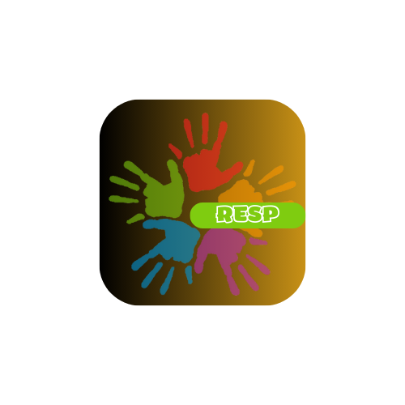
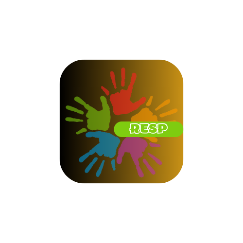
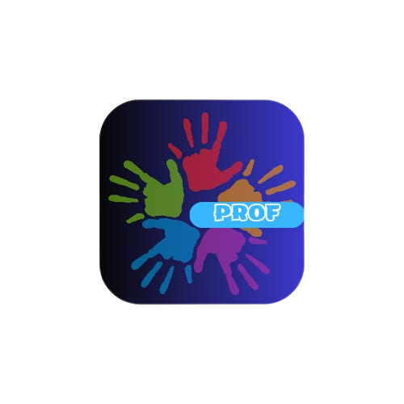
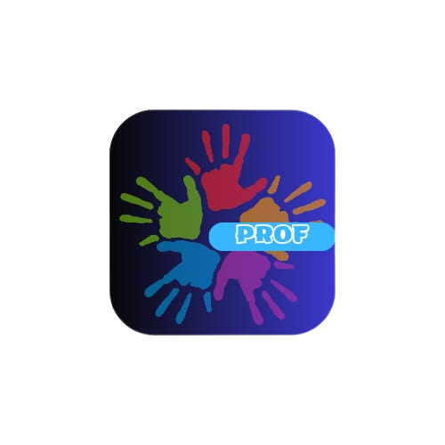

Conectando um mundo de possibilidades e melhorias implementadas ao auxílio de desenvolvimentos das pessoas com este TEA. Nosso aplicativo é dedicado ao estudo do autismo, uma condição complexa e fascinante que afeta muitas pessoas ao redor do mundo. Nossa missão é fornecer informações e recursos valiosos que promovam a conscientização, a aceitação e o apoio às pessoas com autismo e suas famílias.
RESPONSÁVEIS
É habituar os responsáveis com o aplicativo sobre as informações diárias realizadas pelos alunos em sala de aula, explicando os desenvolvimentos adquirido através do auxílio e interação cumpridas junto ao professor. Os responsáveis serão notificados através do envio de mensagens sobre o convívio no dia a dia, o processo de comunicação é entre o professor e os responsáveis, através do aplicativo em tempo real..
.png) 

PROFESSOR
É importante haver um planejamento para que haja organização dos conteúdos que serão trabalhados ao longo do ano junto aos alunos, separando parte teórica, objetivo geral, objetivos específicos, metodologia, para analisar a evolução no cotidiano. Com isso temos um aplicativo para uma interação entre professor e aluno, fazendo uma integração com os responsáveis em tempo real.
.png) 
